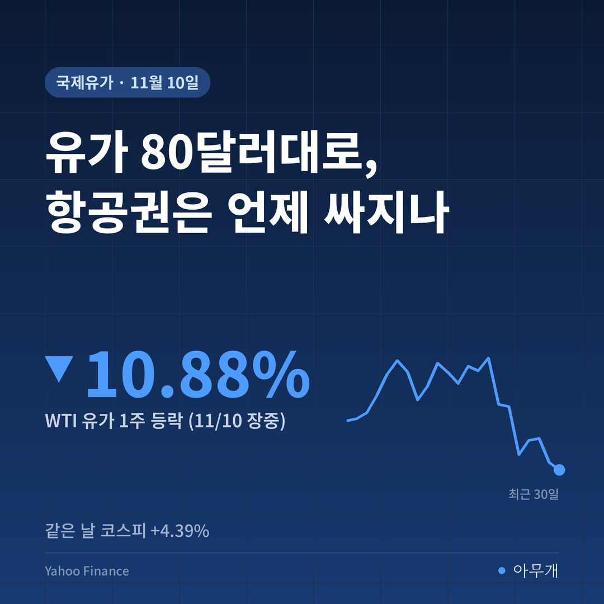
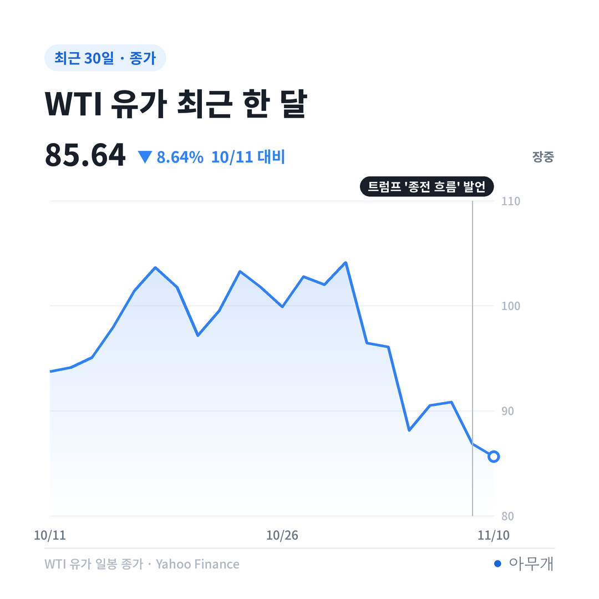
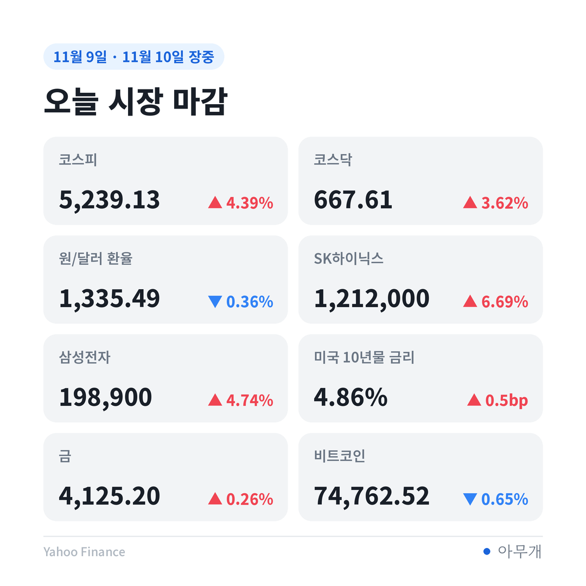
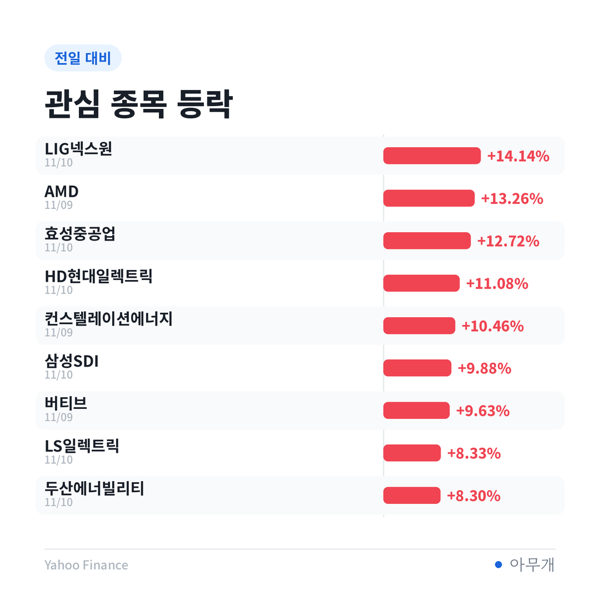

📷 사진 1 자리
2주 만에 100달러대에서 80달러대로
국제유가는 10월 말까지만 해도 배럴당 100달러를 넘나들었어요. 분위기가 바뀐 건 미국 중간선거 전후입니다.
📷 사진 2 자리
| 날짜 | WTI(배럴당) | 무슨 일 |
|---|---|---|
| 10월 29일 | 104.12달러 | 최근 고점 |
| 11월 4일 | 88.12달러 | 중간선거 직후, 하루 새 큰 폭 하락 |
| 11월 9일 | 86.85달러 | 트럼프 "분쟁 종식 쪽으로 흐름" 발언 뒤 4.38% 하락[1][2] |
| 11월 10일(장중) | 85.64달러 | 하락 이어짐 |
같은 날 국제 기준유인 브렌트유도 5.85% 내렸어요[1]. 이란 전쟁이 9개월째 이어지며 연료비가 세계 경제 전반을 짓눌러 왔다는 점에서, 유가가 80달러대로 내려온 건 작은 변화가 아니에요[2].
트럼프 발언, 어디까지 믿을 수 있나
유가를 끌어내린 건 '전쟁이 곧 끝날 수 있다'는 기대예요. 그런데 이 기대는 아직 발언과 보도에 기대고 있어요.
| 구분 | 내용 |
|---|---|
| ✅ 사실 | WTI·브렌트 9일 종가가 4~5%대 하락[1][2] |
| 🗣️ 발언 | 트럼프 대통령이 카타르 총리를 만난 뒤 "분쟁이 꽤 빨리 끝날 것", 새 공격 가능성은 "꽤 낮다"고 언급[2] |
| ⚠️ 보도 | 이란이 카타르를 통해 제재 해제와 호르무즈 해협 새 항로를 요구하는 제안을 보냈다는 로이터 보도. 미국은 검토 중이라고 전해짐[2] |
| 🗣️ 반박 | 이란 최고국가안보회의 쪽 인사는 미국과의 협상 자체를 "가짜 뉴스"라고 부인[2] |
| ✅ 사실 | 미국의 대이란 해상 봉쇄는 유지 중[2] |
트럼프 대통령은 협상이 진지하지 않으면 공격을 다시 할 수 있다는 여지도 남겼어요[2]. 유가가 내려온 이유가 '합의'가 아니라 '합의 기대'라는 점은 기억해 둘 만해요.
코스피도 4% 올랐는데, 대한항공은 왜 더 뛰었나
10일은 거의 모든 종목이 오른 날이었어요. 코스피는 5,239.13으로 4.39%, 코스닥은 3.62% 올랐습니다.
📷 사진 3 자리
| 종목 | 10일 종가 | 전일 대비 |
|---|---|---|
| 대한항공 | 32,450원 | +11.51% (장중 52주 신고가)[1] |
| 대한항공우 | 38,150원 | +29.98% (상한가)[1] |
| 진에어 | 7,990원 | +29.92% (상한가)[1] |
| 아시아나항공 | - | +11.68%[1] |
| 제주항공 | - | +8.78%[1] |
| 코스피 | 5,239.13 | +4.39% |
많이 오른 게 항공주만은 아니었어요. 관심 종목 중에서는 LIG넥스원(+14.14%), 효성중공업(+12.72%), HD현대일렉트릭(+11.08%)도 두 자릿수로 올랐어요.
📷 사진 4 자리
그래서 대한항공 상승분 11.51% 가운데 4.39%는 시장 전체가 같이 오른 몫으로 떼어 놓고 봐야 해요. 남는 7.12%포인트가 유가와 항공 업종만의 이유예요.
기름값과 환율, 두 겹으로 가벼워진 비용
항공사 비용에서 연료는 큰 덩어리이고, 연료는 달러로 사요. 그래서 항공사에는 유가와 원/달러 환율이 같은 방향으로 움직일 때가 가장 반가워요.
지금이 그런 때예요. 원/달러 환율은 10일 오후 3시 30분 기준 1,337.5원으로 하루 새 9.6원 내렸어요[3]. 6월 말 1,549원과 비교하면 원화 값이 13.65% 올랐습니다[4].
증권가에서도 내년 유가 정점 통과와 원화 강세에 따른 비용 감소, 해외여행 수요 회복이 겹칠 수 있다는 분석이 나왔어요[1]. 대한항공·아시아나항공 통합이 12월, 진에어·에어부산·에어서울 통합이 내년 3월로 예정돼 있어 경쟁이 누그러질 것이라는 기대도 함께 붙었어요[1].
내 항공권·환전·난방비에는 언제 닿을까
항공권. 국제선 유류할증료는 보통 지난 한 달간 항공유 평균 가격으로 단계를 정하고, 탑승일이 아니라 발권일 기준으로 붙어요. 10월 유가가 100달러 안팎이었던 만큼, 이번 하락이 할증료에 제대로 반영되려면 한두 달은 걸릴 수 있어요.
환전. 환율 쪽 변화는 바로 체감돼요. 1,000달러를 바꿀 때 6월 말 환율이면 154만9,000원, 10일 기준가로는 133만7,500원이라 21만1,500원 차이가 나요[3][4].
난방비. 여기는 방향이 달라요. 유가가 내린 같은 주에 미국 천연가스(헨리허브) 가격은 오히려 11.40% 올랐어요(10일 장중 기준 1주 등락). 국내 사정도 녹록지 않아요. 올해 1~9월 중동산 LNG(액화천연가스) 수입은 1년 전보다 66.2% 줄었고, 그 빈자리를 북미산이 102.9% 늘며 메웠어요[5].
그런데 미국 의회 구도가 바뀌면서 LNG 신규 개발 인허가 속도가 늦어질 수 있다는 전망이 나와요[5]. 기름값은 내려도 겨울 가스값은 따로 움직일 수 있다는 뜻이에요.
유가가 갈 수 있는 세 방향
| 시나리오 | 무엇을 보면 되나 | 예상되는 영향 |
|---|---|---|
| 협상 진전 | 미국·이란 공식 협상 확인, 호르무즈 항로 합의 | 유가 80달러대 안착, 12~1월 유류할증료 인하 여지. 항공·여행주에 우호적 |
| 기대만 남고 교착 | 이란 측 부인이 이어지고 해상 봉쇄 지속 | 유가 되돌림 가능. 10일 하루 급등한 항공주는 변동성 커질 수 있음 |
| 공격 재개 | 트럼프 대통령의 공격 재개 언급, 중동 해상 사고 | 유가 100달러대 복귀 위험. 원화 약세까지 겹치면 항공사 비용 두 겹 부담 |
이번 유가 하락에서 가장 눈에 띈 건 기름과 가스가 따로 움직였다는 점이에요. 주식시장은 '전쟁이 끝나면 연료비가 내려간다'는 쪽에 바로 걸었지만, 겨울을 앞둔 가스는 공급 걱정이 더 커졌어요. 항공주에는 좋은 소식이어도 가계의 겨울 난방비까지 같이 가벼워진다고 보기는 아직 이르다고 봐요.
✍️ 직접 보거나 들은 경험이 있으면 위 문단에 한두 줄 덧붙이세요 (이 안내 줄은 지우기)
반대로 볼 수도 있어요. 전쟁이 실제로 끝나면 중동산 LNG 공급도 차츰 돌아올 테고, 그때는 가스값도 유가를 따라 내려올 수 있어요. 지금 천연가스 상승은 겨울철에 늘 나타나는 계절 요인일 뿐이라는 해석도 가능해요.
이번 주에 볼 것
참고한 기사
이 글은 정보 제공 목적이며 투자 권유가 아닙니다. 투자 판단과 책임은 본인에게 있습니다.
수치 출처: Yahoo Finance(유가·지수·관심 종목, 11월 10일 수집), 항공주 종가는 연합뉴스



